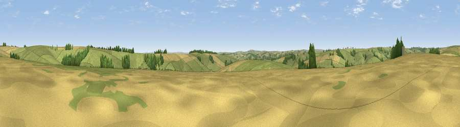

Viewpoint near Sydling St Nicholas
#28658 in England · top 66% of its area beats it · near Sydling St Nicholas · path 202 mWhere it is
The exact computed spot (SY 64275 97975). Click the marker for map links.
Public access: the nearest public right of way is about 202 m away — the final stretch may cross private land. Computed from Natural England's CRoW access layer and OpenStreetMap rights of way — not the legal definitive map. Always verify locally.
The view, rendered

A 360° render of this exact spot computed from the terrain model, tree cover and land cover — summer colours, afternoon light, calibrated against photographs of famous viewpoints. Real trees, hedges and buildings will differ in detail.
The panorama
Grey silhouette: terrain skyline in each direction (720 bearings, Earth curvature and refraction included). Dashed green: skyline with trees (+15 m) and buildings (+8 m) as obstacles. Blue strip: how far the ground is visible on each bearing.
Where the view opens
Wedge length = distance to the farthest visible ground on that bearing (vegetation-aware). Rings at 10, 25 and 50 km.
What fills the view
69% grassland · 24% cropland · 7% woodland
Angular shares of the visible panorama (visual magnitude), not map area. Landscape diversity 0.35 (0–1 Shannon).
Key numbers
More beautiful places nearby
The staircase of upgrades: each row has a higher view potential than everything closer. Driving times are estimates from straight-line distance, calibrated against real road routing — check an actual route before setting out.
| Place | Direction | Drive | Score |
|---|---|---|---|
| Viewpoint near Sydling St Nicholas | W · 2 km | ~6 min | 51.6 |
| Viewpoint near Sydling St Nicholas | WNW · 3 km | ~8 min | 56.2 |
| Viewpoint near Cerne Abbas | NE · 5 km | ~10 min | 59.6 |
| Viewpoint near Cerne Abbas | NE · 5 km | ~12 min | 59.9 |
| Viewpoint near Hilfield | N · 6 km | ~13 min | 60.6 |
| Watts Hill [Giant Hill] | NNE · 6 km | ~13 min | 67.5 |
| Viewpoint near Hilfield | N · 8 km | ~16 min | 71.6 |
| Eggardon Hill | WSW · 10 km | ~20 min | 80.3 |
50.78024, -2.50809 · source: screening · position refined by local search. Computed location — check access rights before visiting.